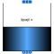

TankWithTopPortsTank with inlet/outlet ports and with inlet ports at the top |

|
Diagram
{kind=link}
Information
This information is part of the Modelica Standard Library maintained by the Modelica Association.
Model of a tank that is open to the environment at the fixed pressure
p_ambient.
The tank is filled with a single or multiple-substance liquid,
assumed to have uniform temperature and mass fractions.
At the top of the tank over the maximal fill level height a vector of FluidPorts, called topPorts, is present. The assumption is made that fluid flows always in to the tank via these ports (and never back in to the connector).
The vector of connectors ports are fluid ports at the bottom and side of the tank at a definable height. Fluid can flow either out of or in to this port. The fluid level of the tank may be below one of these ports. This case is approximated by introducing a large pressure flow coefficient so that the mass flow rate through this port is very small in this case.
If the tank starts to over flow (i.e., level > height), an assertion is triggered.
When the diagram layer is open in the plot environment, the level of the tank is dynamically visualized. Note, the speed of the diagram animation in Dymola can be set via command animationSpeed(), e.g., animationSpeed(speed = 10)
Parameters (24)
| energyDynamics |
Value: system.energyDynamics Type: Dynamics Description: Formulation of energy balance |
|---|---|
| massDynamics |
Value: system.massDynamics Type: Dynamics Description: Formulation of mass balance |
| substanceDynamics |
Value: massDynamics Type: Dynamics Description: Formulation of substance balance |
| traceDynamics |
Value: massDynamics Type: Dynamics Description: Formulation of trace substance balance |
| p_start |
Value: p_ambient Type: AbsolutePressure (Pa) Description: Start value of pressure |
| use_T_start |
Value: true Type: Boolean Description: = true, use T_start, otherwise h_start |
| T_start |
Value: if use_T_start then system.T_start else Medium.temperature_phX(p_start, h_start, X_start) Type: Temperature (K) Description: Start value of temperature |
| h_start |
Value: if use_T_start then Medium.specificEnthalpy_pTX(p_start, T_start, X_start) else Medium.h_default Type: SpecificEnthalpy (J/kg) Description: Start value of specific enthalpy |
| X_start |
Value: Medium.X_default Type: MassFraction[Medium.nX] (kg/kg) Description: Start value of mass fractions m_i/m |
| C_start |
Value: Medium.C_default Type: ExtraProperty[Medium.nC] Description: Start value of trace substances |
| height |
Value: Type: Height (m) Description: Maximum level of tank before it overflows |
| crossArea |
Value: Type: Area (m²) Description: Area of tank |
| V0 |
Value: 0 Type: Volume (m³) Description: Volume of the liquid when level = 0 |
| p_ambient |
Value: system.p_ambient Type: AbsolutePressure (Pa) Description: Tank surface pressure |
| T_ambient |
Value: system.T_ambient Type: Temperature (K) Description: Tank surface Temperature |
| level_start |
Value: 0.5 * height Type: Height (m) Description: Start value of tank level |
| nTopPorts |
Value: 0 Type: Integer Description: Number of inlet ports above height (>= 1) |
| nPorts |
Value: 0 Type: Integer Description: Number of inlet/outlet ports (on bottom and on the side) |
| portsData |
Value: Type: VesselPortsData[nPorts] Description: Data of inlet/outlet ports at side and bottom of tank |
| use_HeatTransfer |
Value: false Type: Boolean Description: = true, if HeatTransfer model is used |
| hysteresisFactor |
Value: 0.1 Type: Real Description: Hysteresis for empty pipe = diameter*hysteresisFactor |
| stiffCharacteristicForEmptyPort |
Value: false Type: Boolean Description: = true, if steep pressure loss characteristic for empty pipe port |
| zetaLarge |
Value: 1e5 Type: Real Description: Large pressure loss factor if mass flows out of empty pipe port |
| m_flow_small |
Value: system.m_flow_small Type: MassFlowRate (kg/s) Description: Regularization range at zero mass flow rate |
Inputs (1)
| fluidVolume |
Default Value: V Type: Volume (m³) Description: Volume |
|---|
Connectors (3)
| topPorts |
Type: VesselFluidPorts_a[nTopPorts] Description: Inlet ports over height at top of tank (fluid flows only from the port in to the tank) |
|
|---|---|---|
| ports |
Type: VesselFluidPorts_b[nPorts] Description: Inlet/outlet ports at bottom or side of tank (fluid flows in to or out of port; a port might be above the fluid level) |
|
| heatPort |
Type: HeatPort_a |
Components (4)
| system |
Type: System Description: System properties |
|
|---|---|---|
| medium |
Type: BaseProperties |
|
| portsData |
Type: VesselPortsData[nPorts] Description: Data of inlet/outlet ports at side and bottom of tank |
|
| heatTransfer |
Type: HeatTransfer |
Used in Examples (7)
|
Modelica.Fluid.Examples.AST_BatchPlant Model of an experimental batch plant |
|
|
Modelica.Fluid.Examples.AST_BatchPlant.Test Tank with one time-varying top inlet mass flow rate and a bottom outlet into the ambient |
|
|
Modelica.Fluid.Examples.AST_BatchPlant.Test |
|
|
Modelica.Fluid.Examples.AST_BatchPlant.Test Demonstrates a tank with one constant top inlet mass flow rate and a bottom outlet into the ambient |
|
|
Modelica.Fluid.Examples.AST_BatchPlant.Test Demonstrates a tank with one constant top inlet mass flow rate and a bottom outlet into the ambient |
|
|
Modelica.Fluid.Examples.AST_BatchPlant.Test Demonstrates a tank with one constant top inlet mass flow rate and a bottom outlet into the ambient |
|
|
Modelica.Fluid.Examples.AST_BatchPlant.Test Demonstrates a tank with one constant top inlet mass flow rate and a bottom outlet into the ambient |